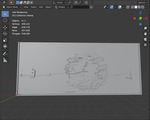
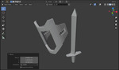
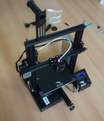
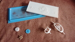
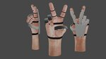
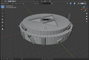
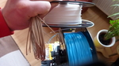

<meta charset="utf-8">
<meta name="viewport" content="width=device-width">
<!-- <meta name="viewport" content="width=device-width, initial-scale=1.0, user-scalable=1.0, minimum-scale=1.0, maximum-scale=1.0"> -->
<meta name="description" content="Webseite für die Informatik AG Hückelhoven">
<meta name="keywords" content="Hückelhoven, Informatik AG, Adam Brunnmeier">
<meta name="author" content="Adam Brunnmeier">
<link rel="icon" href="/favicon.png">
<title>InfoAG Hückelhoven</title>

<link rel="stylesheet" href="style.css">

<header>
  <span>Gymnasium Hückelhoven</span>
  <h1>Triff deine Experten-Mitschüler!</h1>
  <p>
    Diese Leute haben sich mit Zeit und Erfahrung zu Meistern ihrer Skills entwickelt. Sie können nicht alles, aber was sie könnnen, das können sie gut. Jetzt sind sie bereit, ihre Erfahrung mit dir zu teilen.
  </p>
  <div class="skills">
    <a class="tinkercad" href="#thelunaticartist"></a>
    <a class="blender" href="#adabru"></a>
    <a class="blender" href="#adabru"></a>
    <a class="3ddruck" href="#adabru"></a>
    <a class="3ddruck" href="#adabru"></a>
  </div>
</header>
<section>
  <div id="first">
    <h2>Wie nimmst du Kontakt auf?</h3>
    <p>
      Wenn du einen Skill anstrebst, hast du mehrere Möglichkeiten, von ihnen zu lernen. Als kompletter Anfänger ist es gut, wenn du dir vorher schon ein oder zwei Youtube Videos für Einsteiger anschaust. Außerdem kannst du versuchen, selbständig die benötigte Software bei dir zum Laufen zu kriegen. Das ist aber nicht notwendig.
    </p>
    <p>
      Dann kannst du direkten Kontakt zu den Experten aufnehmen. Auf dieser Seite findest du ihre Kontaktadressen. Sag ihnen wer du bist, wofür du dich interessierst und was du schon kannst. Du kannst auch gerne Screenshots mitsenden. Die Experten können dir dann einen Tipp geben, wo du anfangen kannst zu lernen.
    </p>
    <p>
      Fortgeschrittene Fragen können dir die Experten am besten beantworten, wenn sie konkrete Erfahrung dazu haben. Am einfachsten ist es deshalb, wenn du dir die veröffentlichten Projekte der Experten ansiehst und dann Fragen stellst wie "Wie hast du den Hintergrund in Bild xyz gemalt?" oder "Wie hast du den Turm modelliert?". Andere Fragen sind aber auch ok.
    </p>
    <p>
      Normalerweise hast du zusätzlich die Möglichkeit, die Experten freitags von 14:20 - 15:30 in der Informatik AG persönlich anzutreffen. Frag am besten vorher schon, ob sie anwesend sein werden und dir weiterhelfen können.
    </p>
  </div>
  <div id="second">
    <h2>Die Experten</h3>
    <div class="expert" id="thelunaticartist">
      <div class="profileimage">
        
        <p>The Lunatic Artist</p>
      </div>
      <div class="skills">
        <p>Skills: <strong>Krita, Tinkercad</strong></p>
        <p>Kontakt: <a href="mailto:akira-kaneshiro@mail.de?subject=Kontaktanfrage">akira-kaneshiro@mail.de</a></p>
        <a class="tinkercad" href="experts/thelunaticartist/fullres/tinkercad1.jpg"></a>
      </div>
    </div>
    <div class="expert" id="silas">
      <div class="profileimage">
        
        <p>Silas</p>
      </div>
      <div class="skills">
        <p>Skills: <strong>Kodu</strong></p>
        <p>Kontakt: <a href="mailto:silas.hennes@t-online.de?subject=Kontaktanfrage">silas.hennes@t-online.de</a></p>
      </div>
    </div>
    <div class="expert" id="snakegamingyt">
      <div class="profileimage">
        
        <p>SnakegamingYT</p>
      </div>
      <div class="skills">
        <p>Skills: <strong>Tinkercad</strong></p>
        <p>Kontakt: <a href="mailto:snakegamingyt07@gmail.com?subject=Kontaktanfrage">snakegamingyt07@gmail.com</a></p>
      </div>
    </div>
    <div class="expert" id="dominik">
      <div class="profileimage">
        
        <p>Dominik Gruschka</p>
      </div>
      <div class="skills">
        <p>Skills: <strong>PC</strong></p>
        <p>Kontakt: <a href="mailto:dominik.gruschka@gmx.de?subject=Kontaktanfrage">dominik.gruschka@gmx.de</a></p>
      </div>
    </div>
    <div class="expert" id="adabru">
      <div class="profileimage">
        
        <p>Adam / adabru</p>
      </div>
      <div class="skills">
        <p>Skills: <strong>Blender, Gimp, 3d-Druck</strong></p>
        <p>Bis 2013 war ich Schüler am Gymnasium, jetzt engagiere ich mich als Ehemaliger für die Maker-Szene in Hückelhoven. Meine Hauptkenntnisse liegen in der Software-Entwicklung. Allerdings bringt die beste Software nichts, wenn die Maschine nicht passt.</p>
        <p>
          Du kannst mich über <a href="mailto:adam.brunnmeier@gmail.com?subject=Kontaktanfrage">adam.brunnmeier@gmail.com</a>
          oder <a href="https://discord.gg/RZ2zRpu">discord</a> kontaktieren.
        </p>
        <a class="blender" href="experts/adabru/fullres/blender1.jpg"></a>
        <a class="blender" href="experts/adabru/fullres/blender2.jpg"></a>
        <a class="blender" href="experts/adabru/fullres/blender3.jpg"></a>
        <a class="blender" href="experts/adabru/fullres/blender4.jpg"></a>
        <a class="gimp" href="experts/adabru/fullres/gimp1.png"></a>
        <a class="gimp" href="experts/adabru/fullres/gimp2.jpg"></a>
        <a class="3ddruck" href="experts/adabru/fullres/3ddruck1.jpg"></a>
        <a class="3ddruck" href="experts/adabru/fullres/3ddruck2.jpg"></a>
        <a class="3ddruck" href="experts/adabru/fullres/3ddruck3.jpg"></a>
      </div>
    </div>
  </div>
</section>
<footer>Verantwortlich für diese Seite ist adam.brunnmeier@gmail.com</footer>
